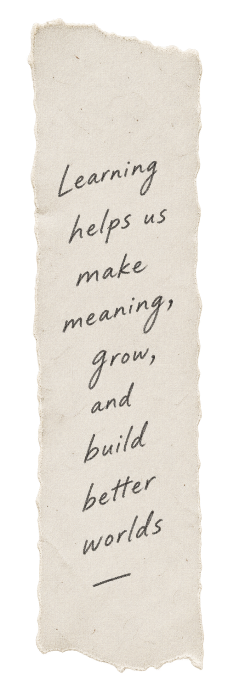

People / Learning / Meaningful Work
I study how adults
learn, & design learning experiences that help
them do it.
Learning designer, researcher, & educator working at the intersection of adult education, learning science, workplace learning, & technical education.

Questions I keep returning to
How do people become self-directed learners?
What happens when we treat learning design as an evidence-based practice?
Welcome
Placeholder: this portfolio exists to [state your purpose] for [state your intended audience]. The sections above and below reflect that focus — research and scholarship, applied learning design work, and ongoing reflections on practice.
About
Placeholder for a short introduction: your background, your current role, and the thread connecting your research interests to your practice.
Philosophy, Values, and Goals
Placeholder for a statement of your teaching/learning-design philosophy, core values, and goals as they relate to the audience and purpose stated above.